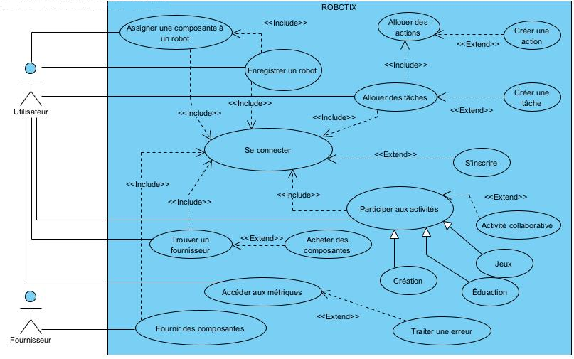

IFT 2255 - Été 2024- Devoir 1
Information générale
Nom de l'équipe: Équipe Java opps 🎀❤️
Lien vers dépôt GitHub
Nom: Maha Amhaouch
Matricule: 20272882
Courriel: maha.amhaouch@umontreal.ca
temps mis:
Nom: Sabrina Aoude
Matricule: 20279873
Courriel: sabrina.aoude@umontreal.ca
temps mis:
Nom: Audrey-Maude Lavoie
Matricule: 20246095
Courriel: audrey-maude.lavoie@umontreal.ca
temps mis:
Nom: Chaimaa Dannane
Matricule: 20139572
Courriel: chaimaa.dannane@umontreal.ca
temps mis: 8 heures
Distribution des tâches
Soumissionaire: Audrey-Maude Lavoie
| Tâche |
Maha |
Audrey |
Sabrina |
Chaimaa |
| Diagramme de classe |
Classes, associations, attributs (50%) |
Methodes, contraintes (50%) |
VPP (40%) |
VPP (60%) |
| Descriptions de cas d'utilisation |
UI (30%) |
Logique (70%) |
ERVEFDFEFD |
ERVEFDFEFD |
| Risques et Exigences |
UI (30%) |
Logique (70%) |
ERVEFDFEFD |
ERVEFDFEFD |
| Implémentation |
UI (30%) |
Logique (70%) |
ERVEFDFEFD |
ERVEFDFEFD |
Github et Insights
L'étudiante Chaimaa Dannane a utilisé deux comptes pour mettre à jour le dépot, sous deux différents pseudo @ChayMaDan et @micha

Tâche 1 : Glossaire
Utilisateur :
Client qui souhaite trouver un fournisseur, enregistrer ses robots, les contrôler (tâches, activités) ou en faire le suivi (métriques, anomalies, intervention). Il est identifié dans le système par un pseudo unique.
Système :
Ensemble des composantes qui, par le biais de tâches, interagissent pour atteindre un objectif cible. Dans le cas de Robotix, cela se traduit principalement par l'utilisation de robots, d'interfaces, de capteurs et au moyen des utilisateurs.
Robot :
Outil programmable pour réaliser des tâches de manière autonome et traiter de l’information (commandes, instructions). Il doit avoir au moins un CPU et une autre composante. La conception d’un robot dépend de son rôle dans le système.
Flotte :
Ensemble de robots regroupés pour réaliser de façon collaborative différentes activités. La gestion d’une flotte nécessite la planification des missions, la configuration des différentes composantes et une mise en œuvre efficace du système.
Composante :
Partie identifiable d’un robot telles que CPU (Wi-Fi, Bluetooth), roues, bras, hélice, caméra, haut-parleur, micro et écran. Certaines composantes sont essentielles pour réaliser certaines actions.
Numéro de série :
Identifiant (numéro séquentiel ou UUID) propre et unique du CPU que possède chaque robot. L'unicité de l'identification permet de faciliter le suivi des robots au sein du système.
Inventaire :
Mécanisme d’inventorisation des robots et des composantes disponibles, permettant leur suivi et gestion efficace. Il fournit pour chaque robot des détails tels que son numéro de série, son nom, son type et ses métriques.
Fournisseur :
Client qui vend aux utilisateurs les robots et les composantes. Il fournit le numéro de série des robots et les fils de connexion. Il est associé à une compagnie et a une capacité de fabrication. Il est identifié dans le système par un nom unique.
Action :
Opération spécifique qu’un robot peut exécuter s’il a les composantes nécessaires. Elles sont créées indépendamment des robots et peuvent être assignées aux tâches. Le robot peut bouger (déplacement, stationnement), diffuser des sons, parler, écouter, afficher du texte ou des graphiques, etc.
Tâche :
Séquence d'actions réalisées dans un ordre. L’utilisateur peut les créer, les affecter à ses robots et les planifier (horaire spécifique, action déclencheur) pour qu’elles soient réalisées sans son intervention.
Activité :
Ensemble de tâches liées entre elles qui contribuent à la réalisation d'un objectif plus large. L’utilisateur peut participer à des activités individuelles ou collaboratives avec sa flotte de robots.
Jeu :
Activité ludique où les participants (utilisateurs) sont offerts des défis et des règles et s’engagent le plus souvent dans une compétition.
Création :
Activité où l’utilisateur peut créer des objets virtuels en utilisant des outils numériques tels que les logiciels de conception assistée par ordinateur (CAO) et en créer des réels avec l’impression 3D.
Éducation :
Activité où les robots sont utilisés pour enseigner à l’utilisateur différentes compétences telles que les langues, la programmation, les mathématiques, les sciences et l’histoire.
Efficacité énergétique :
Différence entre la quantité d'énergie fournie par le robot (énergie utile) et la quantité d'énergie utilisée pour le faire fonctionner (énergie consommée). Ce rapport vise à réduire les coûts et à optimiser la façon dont les ressources sont exploitées.
Usage :
Évolution périodique des données recueillies par les capteurs d’un robot. Permet de suivre l’activité d’un robot.
Métrique :
Indicateur ou ratio quantitatif qui est utilisé pour mesurer et surveiller la performance (disponibilité, état et utilisation généraux) d’un robot ou d’une flotte. Elle communique des informations qui aident l’utilisateur à gérer les ressources et prendre des décisions.
État :
Conditions actuelles d’un robot telles que sa position, sa vitesse, le niveau de sa batterie, sa consommation CPU et mémoire.
Tâche 2 : Diagramme de cas d'utilisation UML
Lien vers fichiers Visual Paradigm

Tâche 3 : Descrpition des cas d'utilisation
Cas d'utilisation : S'inscrire.
But : Permettre à un utilisateur ou un fournisseur de créer un compte sur le logiciel Robotix.
Préconditions :
- Avoir une adresse mail valide.
- Avoir un numéro de téléphone valide.
- La compagnie est déjà enregistrée sur Robotix.
Acteurs : Utilisateur / Fournisseur (principal)
Scénario principal :
1. L'utilisateur ouvre la page d'inscription de Robotix.
2. L'utilisateur ajoute ses données personnelles.
2.1. ajouter nom et prénom.
2.2. ajouter pseudo.
2.3. ajouter adresse email.
2.4. ajouter mot de passe.
2.5. confirmer mot de passe.
2.6. ajouter téléphone.
2.7. choisir nom de la compagnie à partir d’une liste déroulante.
3. Le système vérifie la validité des informations.
4. Le système envoie un email de confirmation à l'adresse fournie.
5. L'utilisateur clique sur le lien de confirmation dans l'email.
6. Le système confirme l'inscription.
Scénarios alternatifs :
- Scénario alternatif 1 :
2.2a.1. L'utilisateur choisit un pseudo déjà utilisé.
2.2a.2. Le système lui demande de choisir un autre pseudo.
- Scénario alternatif 2 :
2.5a.1 L’utilisateur entre un mot de passe différent.
2.5a.2 Le système lui demande d’entrer le même mot de passe.
- Scénario alternatif 3 :
4a.1. L’utilisateur ne reçoit pas de mail de confirmation.
4a.2. L'utilisateur demande un nouvel envoi de l'email de confirmation.
- Scénario alternatif 4 :
(1-6)b. Le fournisseur suit les mêmes étapes pour créer un compte.
Postcondition : L'utilisateur possède un compte sur Robotix.
Cas d'utilisation : Se connecter.
But : Permettre à un utilisateur ou un fournisseur de se connecter à Robotix pour contrôler les robots ou fournir des composantes.
Précondition : Avoir un compte sur Robotix.
Acteurs : Utilisateur/ Fournisseur (principal)
Scénario principal :
1.L'utilisateur ouvre la page de connection de Robotix.
2. L'utilisateur s’authentifie.
2.1 L’utlisateur entre son pseudo.
2.2 L’utilisateur entre son mot de passe.
3. Le système vérifie les informations.
4. Le système donne accès au logiciel.
Scénarios alternatifs :
- Scénario alternatif 1 :
2.1.a.1. L'utilisateur oublie son pseudo.
2.1.a.2. Le système demande à l’utilisateur son email.
2.1.a.3. L’utilisateur récupère son pseudo.
- Scénario alternatif 2 :
2.2.a.1. L'utilisateur oublie son mot de passe.
2.2.a.2. Le système demande à l’utilisateur son email.
2.2.a.3. L’utilisateur récupère son mot de passe.
- Scénario alternatif 3 :
3a.1. L’authentification n’aboutit pas.
3a.2. Le système affiche un message d’erreur. Retour à l’étape 2.
- Scénario alternatif 4 :
(1-4)b. Le fournisseur suit les mêmes étapes pour se connecter.
Postcondition : L'utilisateur est connecté à Robotix.
Cas d'utilisation : Enregistrer un robot.
But : Un utilisateur peut enregistrer un nouveau robot à son inventaire.
Précondition : L’utilisateur est déjà inscrit à Robotix et il est connecté à son compte.
Acteurs : Utilisateur (principal)
Scénario principal :
1. L’utilisateur choisit l’option « Enregistrer un robot » dans le menu principal.
2. Robotix affiche une liste défilante des composantes disponibles dans l’inventaire de l’utilisateur.
3. L’utilisateur utilise le mécanisme « Filtrer » (type de composante, date d’achat, alphabétique, etc.) ou « Rechercher » pour affiner les résultats de recherche.
3.1 Robotix trie la liste des composantes en fonction du mécanisme choisi.
3.2 Robotix affiche la liste triée.
4. L’utilisateur sélectionne les composantes qu’il souhaite ajouter au robot.
4.1 L’utilisateur enregistre son choix.
5. L’utilisateur saisit un nom et un type pour identifier son robot.
6. L’utilisateur choisir l’option « Enregistrer » à l’écran.
6.1 Robotix ajoute le nouveau robot à l’inventaire de l’utilisateur.
7. Robotix affiche les détails du robot à l’écran : numéro de série (du CPU, il est donné par le fournisseur), nom, type, composantes et date de création.
8. Robotix ramène l’utilisateur au menu principal.
Scénarios alternatifs :
- Scénario alternatif 1 :
(1-7)a. L’utilisateur choisi l’option « Annuler » à l’écran.
(1-7)a.1 Passer à l’étape 8.
- Scénario alternatif 2 :
2b. L’inventaire de l’utilisateur ne contient pas au minimum un CPU et une composante d’un autre type.
2b.1. Robotix affiche « Composantes insuffisantes » à l’écran.
2b.2. Passer à l’étape 8.
- Scénario alternatif 3 :
3b. L’utilisateur n’utilise pas ces mécanismes.
3b.1. Passer à l’étape 4.
- Scénario alternatif 4 :
4b. Le choix des composantes est invalide.
4b.1. Robotix affiche « Veuillez sélectionner au minimum un CPU et une composante d’un autre type. » à l’écran.
4b.2. Retourner à l’étape 4.
- Scénario alternatif 5 :
5b. Les champs sont laissés vides, ils dépassent la limite de caractères ou ils contiennent des caractères invalides.
5b.1. Retourner à l’étape 5.
Postcondition : Robotix affiche à nouveau le menu principal à l’écran. Si l’utilisateur a enregistré un nouveau robot, Robotix l’a ajouté à son inventaire.
Cas d'utilisation : Accéder aux métriques.
But : Permettre à un utilisateur de visualiser les métriques pour refléter la performance de ses robots.
Précondition : Être connecté à Robotix.
Acteurs : Utilisateur (principal)
Scénario principal :
1. L'utilisateur choisit un robot.
2. L'utilisateur accède à la section métriques de ce robot.
3. Le système affiche une liste des métriques de ce robot.
4. L'utilisateur clique sur une des métriques pour afficher plus d’informations.
Scénarios alternatifs :
- Scénario alternatif 1 :
1a.1. L’utilisateur choisit une flotte.
1a.2. L’utilisateur choisit un robot dans la flotte.
- Scénario alternatif 2 :
1b. L’utilisateur choisit une flotte.
2b. L'utilisateur accède à la section métriques de cette flotte.
3b. Le système affiche une liste des métriques de cette flotte.
4b. L’utilisateur choisit un robot dans la flotte. Retour à l’étape 1 dans le scénario principal.
- Scénario alternatif 3 :
1c.1. Pas de robot enregistré.
1c.2. Le système demande à l’utilisateur s’il souhaite enregistrer un robot.
Postcondition : Les métriques sont affichées et vues par l’utilisateur.
Cas d'utilisation : Créer une tâche.
But : Permettre à l'utilisateur de créer une nouvelle tâche et de l'ajouter au répertoire des tâches déjà existantes.
Préconditions :
- Être connecté à son compte robotix.
- Avoir cliqué sur 'allouer une tâche' sur le menu principal.
Acteurs : Fournisseur , Utilisateur (principal)
Scénario principal :
1. Après avoir cliqué sur 'allouer une tâche' l'utilisateur clique sur 'créer une tâche'.
2. Le système demande à l'utilisateur de lui attribuer un nom et type ( mouvement , affichage...) et une petite description.
3. L'utilisateur entre les informations nécessaires.
4. Le système confirme le choix de l'utilisateur.
5. Le système affiche la liste d'actions déjà existantes à l'utilisateur et leurs descriptions ,composantes nécessaires pour les exécuter ... il affiche en bas l'option de créer une nouvelle action aussi. Ces actions rassemblées en ordre logique constituent une tâche.
6. L'utilisateur choisit l'action qui l'intéresse.
7. Le système l'ajoute à la nouvelle tâche et affiche encore la liste d'actions précédentes que l'utilisateur peut ajouter.
8. L'utilisateur continue d'ajouter les actions qui l'intéressent , elles sont ajoutées en ordre et sont exécutées en cet ordre là.
9. Après ajout de la énième action , l'utilisateur confirme son choix d'actions allouées à la tâche.
10. le système confirme le choix de l'utilisateur et lui demande de confirmer la tâche qu'il vient de créer.
11. L'utilisateur confirme son choix.
12. Le système valide et ajoute la nouvelle tâche au répertoire de tâches avec la date de création , nom...
Scénario alternatif :
6.a . L'utilisateur choisit de créer une nouvelle action.
6a.1. Le système se dirige alors vers 'créer une action' c'est un cas d'utilisation séparé qui est déclenché comme extension d'allouer une action.
6a.2. Après execution de ce cas d'utilisation retour à l'étape 7.
Postcondition : L'utilisateur a réussi à créer une tâche .
Cas d'utilisation : Allouer une tâche.
But : Permettre à l'utilisateur d'allouer une tâche à un robot instantanément, planifier l'execution de cette tâche ou encore définit l'event qui déclenche son exécution.
Précondition : Être connecté à son compte robotix.
Acteurs : Utilisateur (principal)
Scénario principal :
1. L’utilisateur est sur le menu principal et clique sur 'allouer une tâche.
2. Le système affiche une liste de tâches déjà existantes et si l'utilisateur clique sur l'une d'elles il a accès à sa description mais aussi à la séquence d'actions ordonnées qui la constituent , le système affiche aussi l'option de 'créer une tâche' plus en bas.
3. L'utilisateur clique sur l'une des tâches de la liste.
4. Le système valide le choix de l'utilisateur et affiche la flotte de robots de l'utilisateur.
5. Le système demande à l'utilisateur de choisir le robot auquel il veut allouer la tâche.
6. L’utilisateur fait son choix.
7. Le système vérifie si le robot choisi est disponible et s'il a les composantes nécessaires pour effectuer cette tâche.
8. Le système valide le choix de l'utilisateur et lui demande s'il veut exécuter cette tâche une ou plusieurs fois.
9. L'utilisateur choisit d'exécuter la tâche une fois.
10. Le système lui propose de choisir s'il exécute instantanément ou s'il veut choisir un horaire.
11. L'utilisateur clique sur ' planifier l'horaire d’exécution et choisit la plage horaire qui lui convient.
12. Le système valide le choix de l'utilisateur.
13. Le système propose à l'utilisateur de choisir un autre robot pour la même tâche.
14. L’utilisateur clique sur non.
15. Le système confirme et affiche une onglet qui précise à quel robot la tâche a été allouée et pour quand.
Scénarios alternatifs :
- Scénario alternatif 1 :
3.a. l'utilisateur clique sur créer une tâche.
3.b. Le cas d'utilisation 'créer une tâche' est déclenché comme extension d'allouer une tâche, après exécution retour à l'étape 4.
- Scénario alternatif 2 :
7a.1. Le robot choisit n'a pas les composantes nécessaires pour exécuter la tâche.
7a.2. Le système signale à l'utilisateur l'absence es composantes nécessaires et lui demande de choisir un autre robot.
7a.3. Retour à l'étape 5.
- Scénario alternatif 3 :
9a. L'utilisateur choisit d'allouer la tâche au robot choisi de manière cyclique.
9a.1 Le système demande à l'utilisateur s'il peut planifier l'exécution de la tâche selon un horaire ou le déclenchement d'un evénement spécifique.
9a.2. L'utilisateur choisit de programmer l'execution selon un horaire temporel.
9a.2.1. L'utilisateur choisit la plage horaire et la fréquence d'exécution.
9a.2.2. L'utilisatuer choisit de programmer l'execution selon une action produite par le robot.
9a.2.2.1 Le système affiche à l'utilisateur une liste d'actions qui vont déclencher l'exécution.
9a.2.2.2 L'utilisateur choisit l'action qu'Il veut et valide son choix.
9a.3 Le système valide le choix de l'utilisateur et retour à l'étape 13.
Postcondition : L'utilisateur a pu allouer une tâche à un robot.
Cas d'utilisation : Participer à des activités.
But : Les utilisateurs désirent enrichir leurs expériences, partager avec d’autres utilisateurs et explorer leur créativité.
Précondition : Posséder un ou des robots et les robots doivent posséder les composantes nécessaires pour participer aux activités.
Acteurs : Utilisateur (principal)
Scénario principal :
1. L’utilisateur navigue à travers le système de Robotix pour y trouver les activités offertes et disponibles.
2. L’utilisateur sélectionne une ou plusieurs activités qui l’intéressent.
3. L’utilisateur inscrit ses robots aux activités sélectionnées.
4. Au moment prévu, l’utilisateur (avec ses robots) participe aux activités auxquelles il s’était inscrit.
5. Durant les activités, l’utilisateur communique et échange avec les autres utilisateurs présents à l’activité.
Cas d'utilisation : Création.
But : Création d’objets réels ou virtuels à l’aide d’outils numériques tels que des logiciels de conception assistée par ordinateur (CAO) et/ou de l’impression 3D.
Précondition : Participer à une activité, comme il s’agit d’un cas spécifique du fait de participer à une activité.
Acteurs : Utilisateur (principal)
Scénario principal :
1. L’utilisateur se présente à l’activité avec ses robots.
2. L’utilisateur s’assure que ses robots soient prêts à être utilisés pour l’activité de création.
3. L’utilisateur ouvre l’outil numérique utilisé (CAO ou impression 3D) pour participer à l’activité.
4. L’utilisateur crée des objets réels et/ou virtuels, tel que désiré.
Cas d'utilisation : Trouver un fournisseur ce componsantes.
But : Un utilisateur peut naviguer à travers la liste de fournisseurs enregistrés dans Robotix.
Précondition : Être connecté à son compte robotix.
Acteurs : Utilisateur (principal)
Scénario principal :
1. L’utilisateur choisit l’option « Trouver un fournisseur » dans le menu principal.
2. Robotix affiche une liste défilante de tous les fournisseurs enregistrés dans le système.
3. L’utilisateur utilise le mécanisme « Filtrer » (pays, ville, compagnie, composante, alphabétique, etc.) ou « Rechercher » pour affiner les résultats de recherche.
3.1 Robotix trie la liste des fournisseurs en fonction du mécanisme choisi.
3.2 Robotix affiche la liste triée.
4. L’utilisateur clique sur le profil d’un fournisseur.
4.1 Robotix affiche les détails du fournisseur (compagnie, nom, adresse, email, téléphone, etc.)
5. L’utilisateur choisi l’option « Acheter chez ce fournisseur » à l’écran.
5.1 Appel du cas Acheter une composante.
6. Robotix ramène l’utilisateur au menu principal.
Scénarios alternatifs :
- Scénario alternatif 1 :
(1-5)a. L’utilisateur choisi l’option « Annuler » à l’écran.
(1-5)a.1 Passer à l’étape 6.
- Scénario alternatif 2 :
2b. Robotix ne trouve aucun fournisseur.
2b.1 Robotix affiche « Aucun fournisseur inscrit » à l’écran.
2b.2 Passer à l’étape 6.
- Scénario alternatif 3 :
3b. L’utilisateur n’utilise pas ces mécanismes.
3b.1 Passer à l’étape 4.
- Scénario alternatif 4 :
5b. L’utilisateur choisi l’option « Retour » à l’écran.
5b.1 Passer à l’étape 2.
Postcondition : Robotix affiche à nouveau le menu principal à l’écran. Si l’utilisateur a fait l’achat de composantes, Robotix les aura ajoutés à son inventaire.
Cas d'utilisation : Fournir des composantes.
But : Le fournisseur souhaite fournir des composantes aux utilisateurs.
Préconditions :
- Posséder une compagnie.
- Posséder un compte pour fournisseur.
- posséder des composantes à fournir
Acteurs : Fournisseur , Utilisateur (principal)
Scénario principal :
1. Le fournisseur se connecte à son compte Robotix.
2. Le fournisseur ajoute des nouvelles composantes (et leur description) à son inventaire.
3. Le fournisseur consulte régulièrement son profil pour s’assurer que les quantités mises à disposition (dans l’inventaire) soient à jour.
4. Un utilisateur trouve un fournisseur qui possède les composantes qu’il désire.
5. L’utilisateur achète les composantes désirées au sein du fournisseur.
6. Le fournisseur reçoit une notification de la commande et entame la préparation de cette dernière.
7. Le fournisseur expédie la commande chez l’utilisateur.
Scénario alternatif :
2a. L’achat de la composante de la part de l’utilisateur ne fonctionne pas.
2a.1. La compagnie du fournisseur est en rupture de stock quant à la composante désirée par l’utilisateur.
2a.2. L’utilisateur est renvoyé sur la page d’accueil ou la page des composantes.
2a.3. Le scénario reprend à l’étape 2.
Tâche 4 : Risques
Classés par ordre de sévérité
Manque de temps :
produit délivré ne fonctionne pas (crash), panne du logiciel en entier
Sécurité :
La prévention de la fuite des données personnelles des clients et des informations sensibles des robots. Toute faille permet des attaques informatique, compromettre le bon fonctionnement du système et exposer des informations confidentielles. Les robots et les comptes des clients pourraient être piratés.
Erreurs de planification et de communication :
Les communications entre les utilisateurs et les fournisseurs sont propices à de nombreuses erreurs. Des informations incomplètes peuvent être échangées ou des commandes inexactes peuvent être expédiées. Il est toujours nécessaire de s'attendre à des erreurs de livraison, peu importe le niveau de planification.
Rentabilité :
Les avantages obtenus à la suite du développement du produit ne sont pas suffisants pour justifier les effectifs investis. Le produit n'attire pas la clientèle attendue malgré l'étude du marché.
Incompatibilité :
Nous pouvons nous retrouver dans le besoin d’une composante ou d’un robot pour compléter notre flotte qui n’est pas compatible avec le reste de notre système. Il n’est pas rare d’acheter des composantes provenant de différents fournisseurs entrainant ainsi une révision sur tout le projet. Il existe aussi un risque que notre initial achat ne soit pas le bon ou qu’il existe une meilleure version, plus adéquate à nos besoins.
Tâche 5 : Exigences non-fonctionnelles
Utilisabilité :
Le système doit être simple, détaillé, commenté et intuitif, afin de faciliter aux futurs utilisateurs la compréhension du produit et la prise de contrôle des robots.
Confidentialité :
Les données personnelles des clients doivent être protégées. Par exemple, pour les utilisateurs, le système donne seulement accès à son pseudo, son nom et son prénom. Pour le fournisseur, il donne accès à sa compagnie, son nom, son adresse, son adresse courriel et son numéro de téléphone.
Portabilité :
Facilité à intégrer et déplacer le logiciel d’un environnement à un autre sans nécessité de modification ni de dégradation de performance du logiciel. Le système doit être flexible et facilement adaptable à toutes les plateformes matérielles ( ordinateur portable, fixe ,smartphone…) et logicielles ( OS, android, Linux…)
Performance :
Les activités et les tâches réalisées par les robots doivent se faire sans accroc et rapidement. Pour ce faire, les commandes et les actions doivent être implémentés avec des algorithmes efficaces qui privilégient la meilleure complexité temporelle et spatiale.